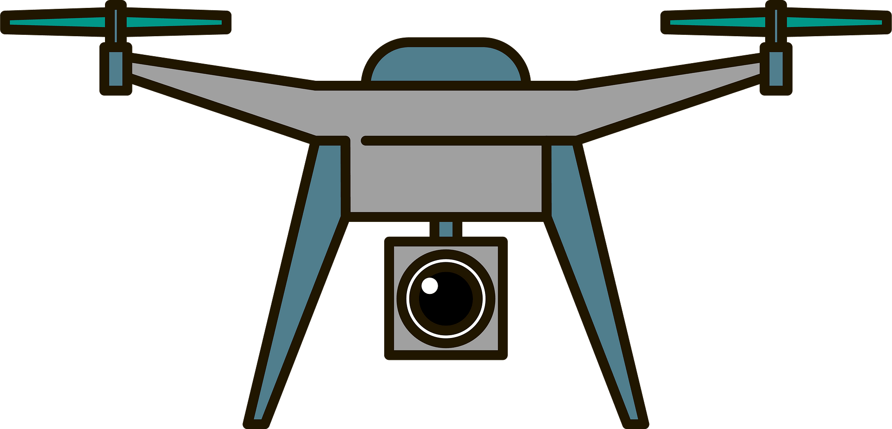
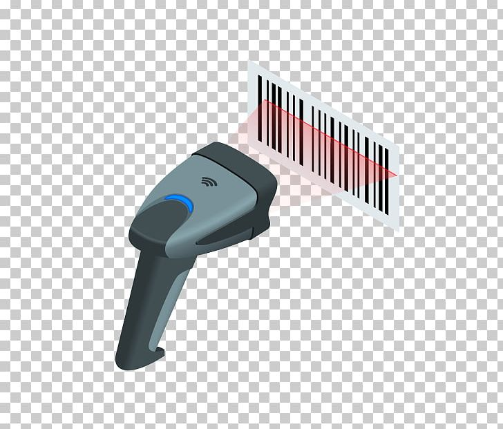
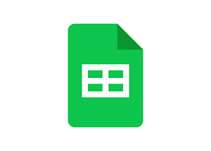

Created machine learning model to predict NBA Most Valuable Player voting for future seasons, training the
model on historic league data by year from 1991 to present day.

Drone Path Simulator
Simulated delivery drone’s path given coordinates, emulating the Traveling Salesman Problem.
Generated 3 possible paths implementing Prim’s, random insertion (greedy), and Branch Bound algorithms.


Pyscanner
Automated attendance system for Leland High School Debate Team (300 students), implementing a Python
application that scans student IDs, tabulates their check-in/check-out times, and identifies absences.